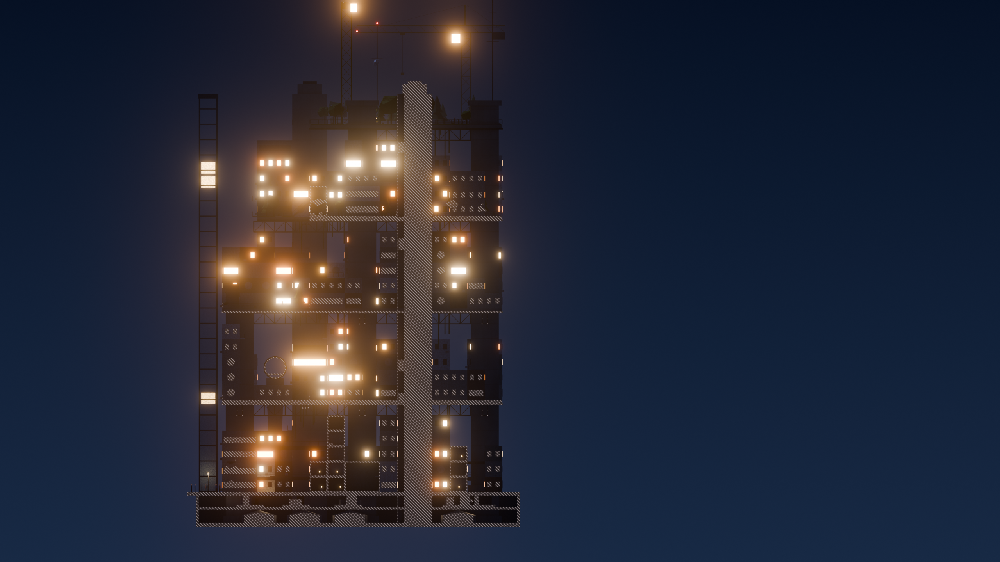

| Layer | Trigger | Level | Variation |
|---|---|---|---|
| Pass-by whoosh | each train · 90 s | 78 dB @ 5 m | doppler ±6%, 4 takes |
| Rail squeal | curve at grid 1 | 70 dB | p = 0.3 per pass |
| Tube resonance | loop, speed-linked | 62 dB | pitch = speed |
| Platform chime | stop “Tube Quarter” | 66 dB | 3-note, per line |